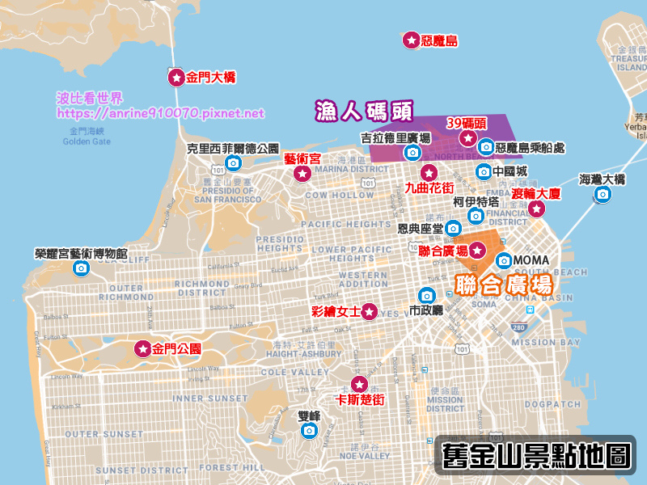

舊金山自由行景點有哪些？Top 10舊金山景點必去

波比推薦Top 10舊金山必去景點如下，第一次去舊金山記得優先進攻，附上舊金山景點地圖方便大家安排行程。
- 金門大橋 (Golden Gate Bridge)
- 九曲花街 (Lombard Street)
- 惡魔島 (Alcatraz Island)
- 聯合廣場 (Union Square)
- 39碼頭 (Pier 39)
- 彩繪女士 (Painted Ladies)
- 金門公園 (Golden Gate Park)
- 藝術宮 (Palace of Fine Arts)
- 海灣大橋＆渡輪大廈 (San Francisco-Oakland Bay Bridge & Ferry Building)
- 卡斯楚街